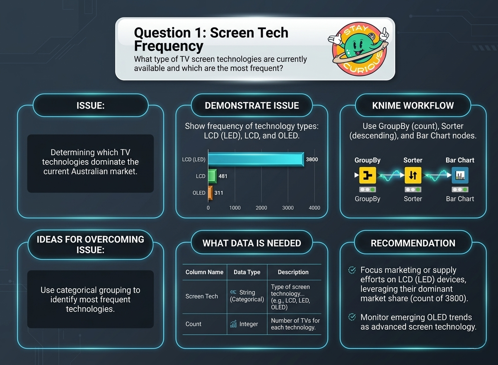

TV Energy Consumption Data Story
Exploring patterns in television energy consumption across different models, sizes, and technologies in the Australian market.
Audience
This visualisation is designed for:
- Consumers interested in energy-efficient televisions
- Policy makers and regulators interested in energy consumption trends
- Researchers studying energy efficiency in consumer electronics
Story Overview
This visualisation explores patterns in TV energy consumption across different television models and specifications. The goal is to help viewers understand how energy consumption varies between television models, the relationship between screen size and power consumption, how energy efficiency ratings impact energy usage, and trends that may help consumers choose more energy-efficient televisions.
Question 1: Screen Tech Frequency
What type of TV screen technologies are currently available and which are the most frequent?

Key Insight: LCD (LED) dominates the Australian market with 3800 models, significantly more than LCD (481) and OLED (311). This indicates LCD (LED) is the most commonly available technology for consumers.
Recommendation: Focus marketing or supply efforts on LCD (LED) devices, leveraging their dominant market share. Monitor emerging OLED trends as advanced screen technology.
Question 2: Screen Size Availability
What screen sizes are currently available, and which are the most frequent?

Key Insight: The 65-inch category is the most frequent size with 843 models, followed by 55-inch (764), 50-inch (334), and 75-inch (91). Larger screens between 55-65 inches dominate the market.
Recommendation: Prioritize the 65-inch category as it is currently the most frequent size. Ensure stock levels and marketing materials align with this highly sought-after category.